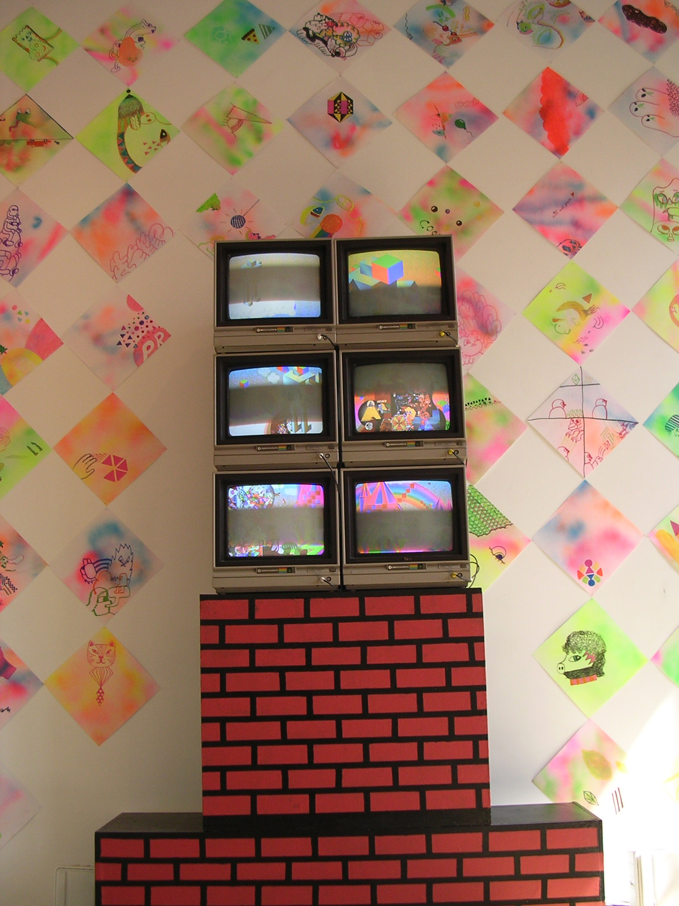

In the early 2000s, alternative spaces in the Northeast and Rust Belt of the US supported a vibrant network of DIY artistic communities. Venues like Providence’s Fort Thunder served as noise music venues, artist studios, and living quarters, and it was in this context that the artist collective Paper Rad was formed. The collective–which consisted of siblings Jessica and Jacob Ciocci, Ben Jones, and other collaborators–cultivated a unique interest in exploring artistic strategies from other media, especially comics and zines, through web-based and multimedia works. Serially updated during the group’s most active period (2001-2008), paperrad.org was both an archive and a artwork, a riot of brightly colored compositions featuring graphics and a mazelike compilation of characters from otherwise overlooked aspects of ’70s and ’80s pop culture.
Jacob and Jessica Ciocci met Ben Jones through the experimental music and comics scene in Boston in the early 2000s. Jones had started a zine called Paper Radio with the artist CF and others. Paper Rad spun off as a separate project with the arrival of the Ciocci siblings. “Paper Radio was like brown and punk rock colors. Like rusty orange. And I think the first time I saw Jacob and Jessica, they were dressed in neon.” – Ben Jones
Working with a number of other collaborators, including Andrew Warren, Joe Grillo, Laura Grant, and Billy Grant, Paper Rad embarked on making a website—a project that differentiated them from most of their peers, who were focusing more on handmade practices. Paperrad.org served as a distribution point for the group’s immense output of content, both digital and analog, found and created. The unique aesthetic—which amalgamated psychedelic colors, tween nostalgia, new age symbolism, and 80s and 90s pop culture—constrasted that of the dark, serious punk aesthetic common in Northeastern DIY punk cultures at the time.In the time before the advent of YouTube and other media platforms, Paper Rad found inspiration and content in found materials, such as found video and handmade artist zines, which were then used abundantly in their animations and online content. The group devised a loose criteria for their work together, a style they called “Dogman 99,” drawing on the Danish film movement “Dogme 95.” Their methodology was based on using very simple software and hardware tools to create an overwhelming onscreen experience.Loosely adhering to these guidelines, Paper Rad created their own world populated with a diverse collection of cartoon characters. The characters often bore bizarre resemblance to existing objects, characters, and icons from American mass media, though filtered through the surreal lens of the group’s aesthetic language.

The Paper Rad website became a favorite of internet users interested in DIY, skater, and punk cultures. The website was always a riot of images and animations, all within Paper Rad's unique style. Paper Rad staged a solo show at Foxy Production in New York in 2004. The following year, they collaborated with Cory Arcangel to produce Super Mario Movie, a 15-minute film programmed into an 8-bit Super Mario Brothers(1985) NES game cartridge. The film premiered at Deitch Projects in Soho, Manhattan on January 15, 2005.
The collective also saw some commercial success. Ben Jones and Jacob Ciocci worked together under the name Wylde File, along with Eric Mast, to produce music videos for a number of artists including Beck. Ben Jones also created the TV show The Problem Solverz, which incorporated characters and aesthetics drawn from Paper Rad. Today, even as Paper Rad’s aesthetic and approach are in evidence throughout internet culture and pop culture, their exact influence can be hard to locate. But for those who came of age online in the first decade of the 21st century, Paper Rad’s legacy can be seen wherever (in the words of Ben Jones) “big, beautiful images scroll down endlessly on a page with animated things.”